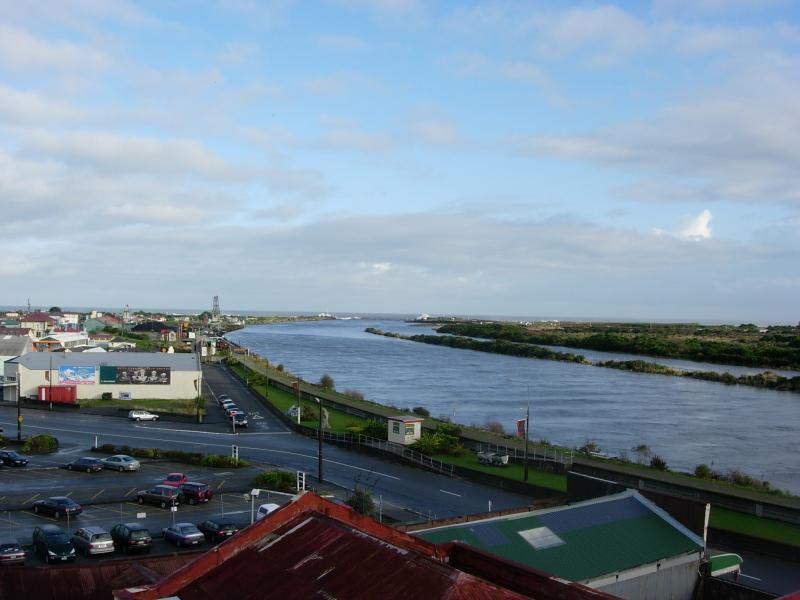
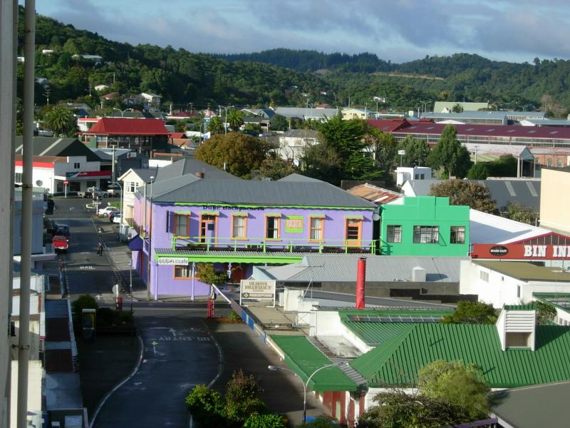
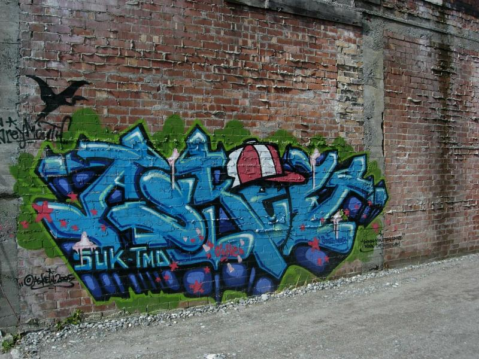
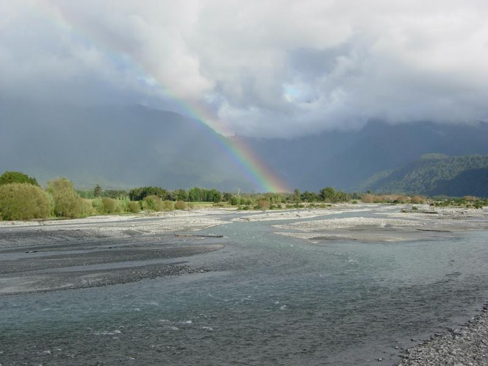
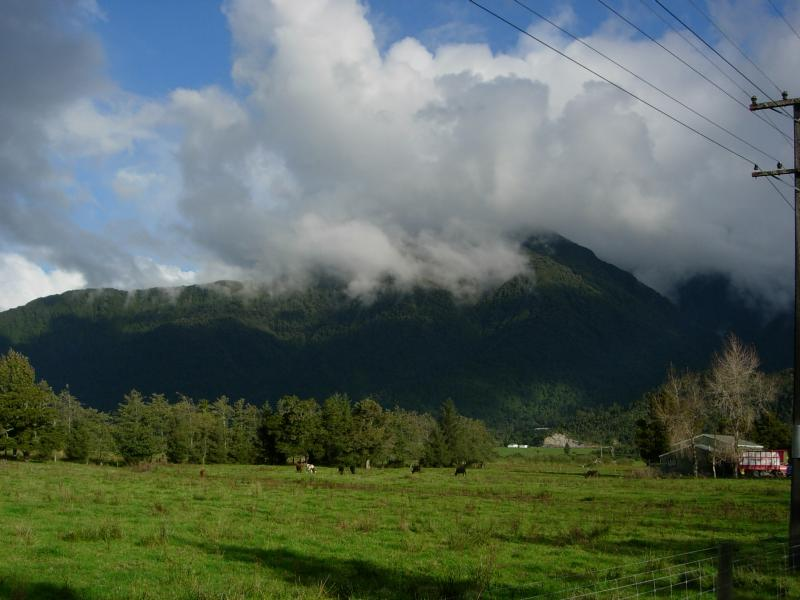
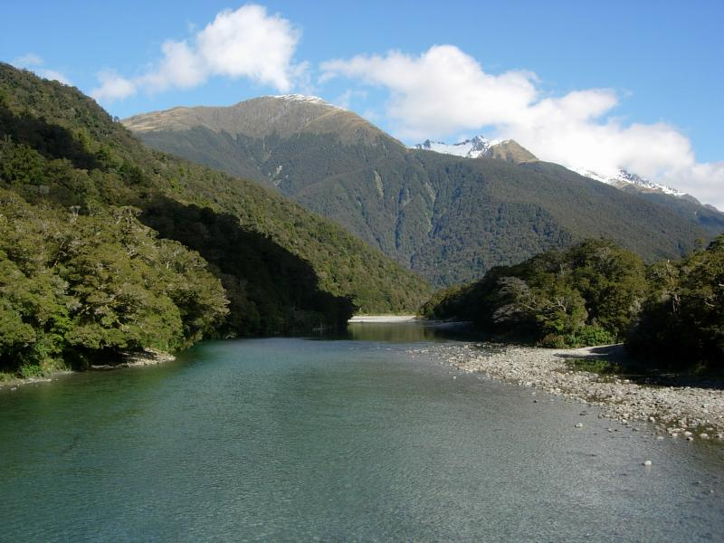
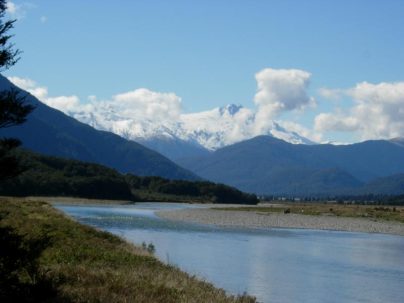

Greymouth

Here's the mouth of the Grey River, seen from the balcony of my hotel room. I stopped at Greymouth because the drive from Abel Tasman to Franz Josef is two days long. The Kingsgate Inn was full of partying 80 year olds, which seemed surreal at the time, but grew on me. The guide books sneer at this coal-mining town, and it grew on me, too.

The garish building is a beer-soaked backpacker hostel (a very common sight in NZ). It's painted even brighter inside. There's a dentist with a tavern-style placard swinging over the door showing a patient grinning at having his teeth drilled. The place is funky. It tries harder. It doesn't care that no one will see the results.

Like most graffiti art in Oz/NZ, this is an ad for its creator, a graphic artist whose URL appears at the left. I ate three meals in guidebook-recommended Cafe 124, really good--dinner when I arrived, breakfast and lunch the next day. Was informed that they don't "do tables" at lunch--you have to place the order at the counter then pick up your own utensils. But the single waiter brings the food and takes away the dishes and asks if everything's ok and is spared exactly one table trip. The work-to-rule mentality seems socialist, but the service can only be described as lassez-faire.
On the Road to Franz Josef

In Frodo's words, Franz Josef lies "across many rivers".



The Southern Alps were used as the Misty Mountains, sometimes by being cut and pasted into other landscapes (see Twizel).